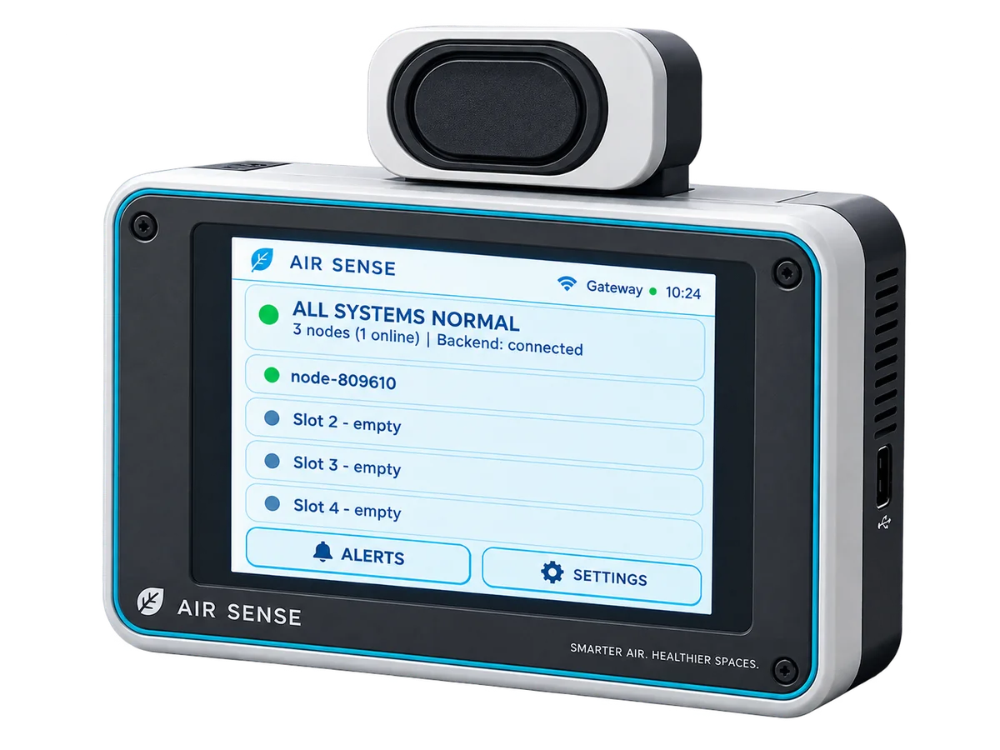

Gateway
ESP32-2432S028R
Facility communication hub. One per zone, always powered.
- 2.8″ touchscreen dashboard
- WiFi uplink to the Air Sense backend
- Direct wireless link to Sensor Nodes
- MicroSD offline storage
- Audible threshold alerts
Firmware
v2.1.0